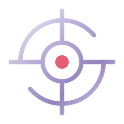
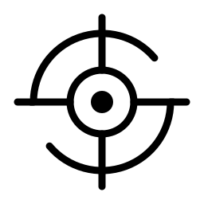
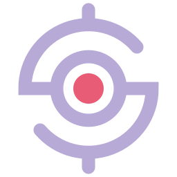
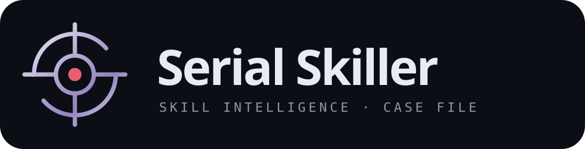

Serial Skiller
Um investigador para o seu arquivo de habilidades. Lê o pedido, examina as pistas e aponta a skill certa, sem você precisar decorar comandos.
Trocadilho: serial killer → serial skiller. O tom é de dossiê, preciso e calmo, nunca violento.
Guia de marca v1 · Noir Glass.
The Target
Uma mira cujo anel externo é um S: o arco de cima, o eixo horizontal e o arco de baixo formam a letra. A mira é a precisão de identificar a habilidade certa; o ponto carmim é o match. Use sempre a geometria do master, sem redesenhar. A versão animada (5 s em loop) conta a história: investiga → encontra → confirma → propaga → recomeça. Ver a animação.




Noir Glass
Fundo escuro e frio, superfícies de vidro, lavanda como cor de marca e carmim reservado para o alvo: o match, o alerta, o que exige atenção. Carmim nunca é decoração.
#0B0E14Fundo da aplicação#151B29Superfícies e ícone#A99BC6Marca, foco, seleção#E85D75Só o alvo / match / alerta#E9EAF2Texto principal#858DA0Ícones neutros, inativosTexto secundário em superfícies: #C3C6D4 · terciário: #9097AB (AA sobre Obsidian/Midnight). Vidro: rgba(21,27,41,.56) + blur 22 px + borda rgba(233,234,242,.14).
Sora + JetBrains Mono
Sora é geométrica como a mira: círculos limpos, leitura fácil em telas escuras. JetBrains Mono faz a voz de "arquivo do caso": rótulos, números, códigos e invocações.
Investigação de habilidades. Bula de cada skill, pronta no momento certo.
Microinterações
Movimento só quando comunica estado. Curtas (160–400 ms), saída suave, e desligadas com prefers-reduced-motion.
Entrega
Masters em SVG na pasta brand/logo/. O nome na assinatura usa a fonte Sora como texto; para gráficas, converta em contornos.